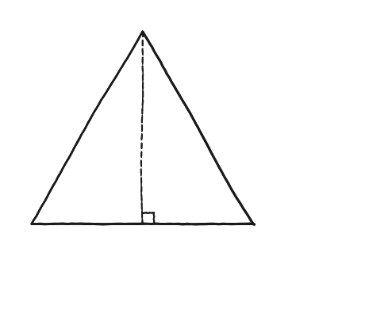
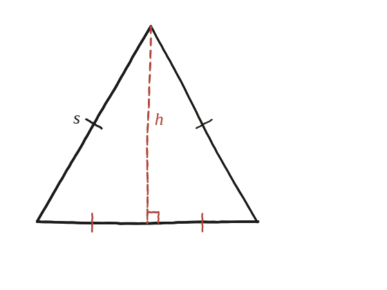

Demostra que l'altura d'un triangle equilàter és (1/2)√3 vegades el seu costat.

Dos trossos, cadascun un cas conegut
L'altura des del vèrtex superior parteix el triangle equilàter en dos trossos. Mirant-los per separat: cadascun és un triangle rectangle, amb hipotenusa el costat del triangle original (s) i un catet la meitat de la base (s/2). El problema es redueix, doncs, a aplicar Pitàgores a un triangle rectangle conegut.
Per què l'altura cau just al punt mitjà, perpendicular
Aquí es donen per bones dues coses que cal saber d'on surten: que l'altura caigui exactament al punt mitjà de la base, i que hi caigui perpendicular. Totes dues vénen del mateix argument ja fet a la Qüestió 1, i convé fixar-se en la direcció en què va, perquè girar-lo el trenca. No es parteix de l'altura: es parteix del segment que uneix el vèrtex amb el punt mitjà del costat oposat. Aleshores els dos trossos ja tenen els tres costats iguals dos a dos —els dos costats iguals del triangle equilàter, les dues meitats de la base (iguals per definició de punt mitjà) i el segment nou, compartit— i, essent congruents pel criteri costat-costat-costat, els dos angles que formen a la base són iguals; com que sumen 180°, en fan 90° cadascun.
Fet a l'inrevés no funcionaria: si es partís de l'altura, els «tres costats iguals dos a dos» no es tindrien encara, perquè la igualtat de les dues meitats de la base és justament el que faltaria per demostrar.

Pitàgores, i arrel quadrada
Amb hipotenusa s i un catet s/2, Pitàgores dona l'altre catet —que és, precisament, l'altura h: h² = s² − (s/2)² = s² − s²/4 = (3/4)s². Traient l'arrel quadrada: h = s·√3/2.
h = (√3/2)s. Surt d'aplicar Pitàgores al triangle rectangle que crea l'altura (hipotenusa s, catet s/2), un cop se sap —de la Qüestió 1— que aquesta altura cau exactament al punt mitjà de la base i hi és perpendicular.
Comprovació
Amb s=10: h²=100−25=75, h=√75=5√3≈8,66 — i (1/2)√3×10≈8,66, coincidint.